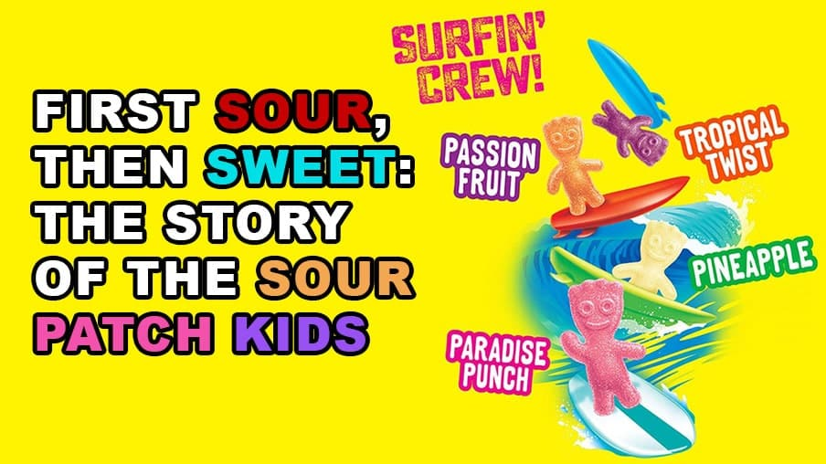

Sour Patch Kids: A Tangy Journey
Discover the history of your favorite sour-then-sweet candy.
Sour Patch Kids were invented in the 1970s by Frank Galatolie, inspired by the shape of 'Mars Men'. They quickly became a hit in the North American market, especially among kids, due to their unique blend of sour and sweet flavors.

Over the years, Sour Patch Kids have evolved, introducing a variety of flavors and formats that have captivated generations. From their humble beginnings to becoming one of the most iconic candies around the globe, their history is a testament to innovation and adaptation.
Explore the Varieties
From classic to extreme sour, there's a flavor for everyone.

SOUR.SWEET.GONE. Enjoy Blue SOUR PATCH KIDS Soft & Chewy bagged candy whenever you want a SOUR THEN SWEET treat. SOUR PATCH KIDS Blue Raspberry Candy can also turn any occasion into a party when you use them as party favors to celebrate birthday, parties, or enjoy them anytime you want a sweet treat. This bagged candy comes sealed to maintain its signature softness and SOUR THEN SWEET candy flavor. FEELING BLUE? You’re not alone, so is the rest of the country! America has decided Blue SOUR PATCH KIDS soft and chewy candy is their favorite color too! Grab a bag and settle in for movie night, fill a bowl for a get-together, or just enjoy them on the go!

Spread a little mischievous holiday cheer with SOUR PATCH KIDS Coal Black Raspberry Soft & Chewy Candy. A fun stocking stuffer for those on your naughty and nice list, this candy has intense black raspberry flavor for a blast to your taste buds that's SOUR. SWEET. GONE. This coal-shaped candy is great for families, coworkers and friends.

Deck the Halls in Style Red & Green SOUR PATCH KIDS candy are mischief-filled sour-then-sweet treats. Soft, chewy, and oh so fun, these holiday candies come in festive fruity flavors and have a gift tag right on the box! This bulk package contains 12 individual 3.5 oz movie theater boxes of Red & Green SOUR PATCH KIDS Cand

Sour Patch Kids - First they're sour. Then they're sweet. Sour Patch Kids are a fun, soft, and chewy candy for children and adults. They are sweet and chewy and packed with Sour Patch pucker power. Keep everyone satisfied when you bring all your favorite Kids to the party.

SOUR PATCH KIDS Lemonade Fest Soft & Chewy Candy delivers a summery, SOUR THEN SWEET blast to your tastebuds. Inspired by your favorite lemonade varieties, this sour candy comes in four delicious flavors: strawberry lemonade, blue raspberry lemonade, cherry lime lemonade and lemonade. Each bag of candy contains pink candy, blue candy, red candy and yellow candy in unique kid shapes that give these sour candies their name. SOUR PATCH KIDS and Lemonade pair so well in these chewy snacks because they both are sour and sweet, which makes them perfect for quick snacks or as holiday candy for Halloween, Valentine's Day or even a candy lover's birthday. SOUR PATCH KIDS soft candy also makes a great movie theater candy to snack on during your favorite flick. This bagged candy is the perfect size for stashing in purses, backpacks and lunchboxes.

SOUR PATCH KIDS Strawberry Soft & Chewy Candy tempts your taste buds with a twist on a classic flavor. Intense strawberry flavor gives this soft candy a mischievous flavor that's SOUR. SWEET. GONE. A conveniently resealable 10 ounce bag ensures every piece of SOUR PATCH KIDS Strawberry stays soft, chewy and full of strawberry flavor.

Mischief-filled Sour Patch Kids start out sour then turn sweet. Whether you’re trying to plan out the perfect prank or the ideal delight, these tasty little confections are chewy treats that are perfect for a play-filled break. Sour Patch Kids come in single packs for individual snacking and bulk packages that are ideal for sharing (pfft who are we kidding, there will be no sharing). Get some for your next movie night, or just for a fun sour-then-sweet treat for yourself, your family, and friends. Sour Patch Kids are Sour, then Sweet, then Gone.